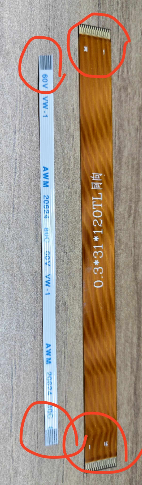
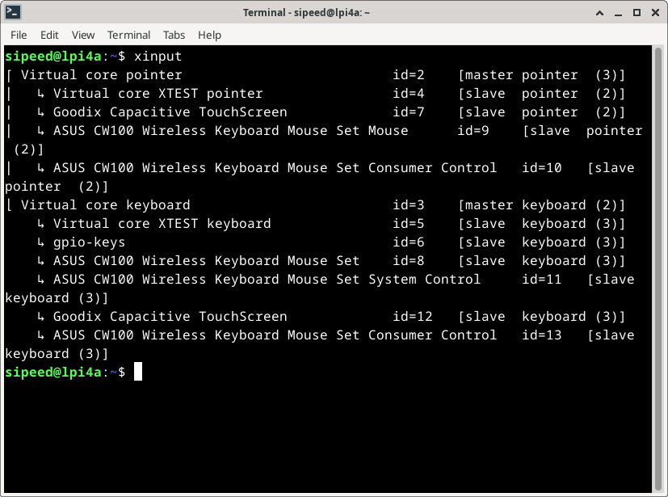

Peripheral Use
Update history
| Date | Version | Author | Update content |
|---|---|---|---|
| 2023-07-21 | v1.1 | ztd |
|
| 2023-05-08 | v1.0 | wonder |
|
SoC-related
CPU frequency
sudo cat /sys/devices/system/cpu/cpu*/cpufreq/cpuinfo_cur_freq
The unit is KHz.
Note that the system comes with a temperature control policy that will downclock the system when it is too idle or too hot. Please maintain good heat dissipation to keep the CPU below 60 degrees for optimal performance.
Chip temperature
cat /sys/class/thermal/thermal_zone0/temp
Unit is 0.001 degrees Celsius.
CPU overclocking
The TH1520 runs at 1.85GHz by default, but preliminary tests show that about 80% of the chips can run at 2GHz, and about 50% of the chips can pass the stress test at 2GHz.
Here is a simple overclocking procedure for reference only, no guarantee for stability and safety.
Check the files under /boot:
fw_dynamic.bin #opensbi
Image #kernel image
kernel-release #commit id of kernel
light_aon_fpga.bin #fw for E902 aon
light_c906_audio.bin #fw for C906 audio
light-lpi4a.dtb #1.85GHz dtb
light-lpi4a_2Ghz.dtb #2GHz overclock dtb
light-lpi4a-ddr2G.dtb #history dtb
Copy light-lpi4a_2Ghz.dtb and overwrite it with light-lpi4a.dtb, reboot, and then you can change the maximum frequency after booting.
Note that there is a chance that it will not boot after this modification, and then you need to re-burn the firmware to recover.
If it boots successfully, then you can check the following values to confirm that it has been successfully overclocked:
sudo cat /sys/devices/system/cpu/cpu0/cpufreq/cpuinfo_max_freq
PWM
Take PWM1 which is connected to the cooling fan as an example, you can enable the fan with the following code:
``bash
echo 1 > /sys/class/pwm/pwmchip0/export
echo 1000000 > /sys/class/pwm/pwmchip0/pwm1/period
echo 1000000 > /sys/class/pwm/pwmchip0/pwm1/duty_cycle
echo 1 > /sys/class/pwm/pwmchip0/pwm1/enable
## GPIOs
The LicheePi 4A has 2x10pin pins on board with 16 native IOs, including 6 normal IOs, 3 pairs of serial ports, and one SPI.
> Note: All native IOs of the SOC are at 1.8V level, please pay attention to the level shift.
> The serial input side on the pins has been processed with 1/2 voltage divider and can be connected to a 3.3V serial port.
The TH1520 SOC has 4 GPIO banks, each with a maximum of 32 IOs:
|Bank |Address | kernel io num|
|--- |--- |--- |
|GPIO0 |0xffec005000 | 456-487 |
|GPIO1 |0xffec006000 | 424-455 |
|GPIO2 |0xffe7f34000 | 392-423 |
|GPIO3 |0xffe7f38000 | 360-391 |
|AO_GPIO |0xfffff41000 | 328-359 |
|AO_GPIO4 |0xfffff52000 | 296-327 |
|AUDIO_GPIO|0xffcb013000 | - |
Where the 4Byte (32bit) at offset 0x0 is the GPIO data register and the 4Byte (32bit) at offset 0x4 is the GPIO direction register.
The corresponding table of GPIO on SOM is:
|NAME |GPIO|
|--- |---|
|01 |GPIO0_27|
|02 |GPIO0_28|
|03 |GPIO2_0 |
|04 |AOGPIO4 |
|05 |GPIO2_1 |
|06 |GPIO1_22|
|07 |GPIO0_24|
|08 |GPIO0_25|
|09 |GPIO3_2 |
|10 |GPIO3_3 |
|11 |GPIO1_3 |
|12 |GPIO1_4 |
|13 |GPIO1_5 |
|14 |GPIO1_6 |
The GPIO correspondences of the pins on the LicheePi 4A are:

> Subject to the labeling of the document, the silkscreen labeling of the internal test version may be incorrect
GPIO operation:
> Note that pinmux may need to be set in advance.
```bash
num=xxx
echo ${num} > /sys/class/gpio/export
echo out>/sys/class/gpio/gpio${num}/direction
echo 1 > /sys/class/gpio/gpio${num}/value
echo 0 > /sys/class/gpio/gpio{num}/value
For example, if you want to operate the 4 GPIOs on the pin, the correspondence is as follows, change the num in the above code to the number corresponding to the GPIO pin you want to operate.
| num | IO Number |
|---|---|
| 427 | IO 1_3 |
| 428 | IO 1_4 |
| 429 | IO 1_5 |
| 430 | IO 1_6 |
It is also possible to manipulate registers directly:
devmem can be downloaded and compiled from here: https://github.com/VCTLabs/devmem2/blob/master/devmem2.c
./devmem 0xffe7f38000 w
In-system GPIO information view:
sipeed@lpi4a:~$ sudo cat /sys/kernel/debug/gpio
Here are the sample results:

UART
System Serial Port
The system serial port of the LicheePi 4A is UART0, which is shown on the side pins.
You can use a USB to serial module to connect to this serial port, i.e. U0-RX and U0-TX, taking care of the cross-connections and the GND connection.

After the connection is completed, you can use serial tools to communicate, we recommend XShell and mobaterm for Windows and minicom for Linux.
Set the serial port baud rate to 115200, then you can log in the serial terminal and do the command operation:
Note: Just after connecting, you can hit several carriage returns to see if there is any response, if there is no response, then check the wiring or serial port configuration.

General serial port
The LicheePi 4A also has UART1/2/3 on the side pins, which can also be operated.
Only UART1 is enabled in the default image, other ports may need to reconfigure the device tree for operation.
Note: The SOC serial port level is 1.8V, which is just around the high level threshold of 3.3V, some serial modules may not be able to input/output correctly, we suggest to use our matching serial modules, or fine-tune the 3.3V voltage of other serial modules to 2.8V.
View Serial Devices
ls /dev/ttyS*
View serial port baud rate and other information
stty -F /dev/ttyS1 -a
Set serial port baud rate, data mode
stty -F /dev/ttyS1 ispeed 115200 ospeed 115200 cs8
Viewing serial port data
cat /dev/ttyS1
Send serial port data
echo "12345" > /dev/ttyS1
Other methods
You can also use minicom, or pyserial library for serial port operation, please find the relevant information for users to use.
I2C
There are several I2C devices (I2C0/1/2/3) on the LicheePi 4A, where 0/1/3 is used to connect to the I2C IO expansion chip, and I2C2 is reserved on the external pin.
Here we use i2c-tools for i2c authentication, which are pre-installed in the image.
sipeed@lpi4a:/usr$ ls /sbin/i2c*
/sbin/i2c-stub-from-dump /sbin/i2cdetect /sbin/i2cdump /sbin/i2cget /sbin/i2cset /sbin/i2ctransfer
List all I2C buses:
sipeed@lpi4a:~$ /sbin/i2cdetect -l
i2c-0 unknown Synopsys DesignWare I2C adapter N/A
i2c-1 unknown Synopsys DesignWare I2C adapter N/A
i2c-2 unknown Synopsys DesignWare I2C adapter N/A
i2c-3 unknown Synopsys DesignWare I2C adapter N/A
i2c-4 unknown Synopsys DesignWare I2C adapter N/A
i2c-5 unknown Synopsys DesignWare I2C adapter N/A
i2c-6 unknown Synopsys DesignWare I2C adapter N/A
i2c-7 unknown DesignWare HDMI N/A
Detecting the device on the I2C bus, we can see that the I2C address of PCA9557PW is 0x18, which is consistent with the schematic:
sipeed@lpi4a:~$ sudo /sbin/i2cdetect -r -y 0
0 1 2 3 4 5 6 7 8 9 a b c d e f
00: -- -- -- -- -- -- -- --
10: -- -- -- -- -- -- -- -- UU -- -- -- -- -- -- --
20: -- -- -- -- -- -- -- -- -- -- -- -- -- -- -- --
30: -- -- -- -- -- -- -- -- -- -- -- -- -- -- -- --
40: -- -- -- -- -- -- -- -- -- -- -- -- -- -- -- --
50: -- -- -- -- -- -- -- -- -- -- -- -- -- -- -- --
60: -- -- -- -- -- -- -- -- -- -- -- -- -- -- -- --
70: -- -- -- -- -- -- -- --

It is also possible to use i2cdump to dump all registers at the specified i2c address, i2cget to read the specified register value at the specified i2c address, and i2cset to write the specified register value at the specified i2c address.
However, since the IO extension chip is already used by the kernel, it is not possible to verify these commands directly. Users can verify it by connecting peripheral devices to I2C2 by themselves.
SPI
There are two SPIs reserved on the LicheePi4A, one on the SPI Flash pads that are blanked out on the back, and one on the pins.
sipeed@lpi4a:~$ ls /dev/spidev2.0
/dev/spidev2.0
TODO
USB
Connect the USB SSD:

The corresponding device can be seen in the system:

USB network card
Connect the USB network card:
右上角的网络图标会变为已连接有线网的状态：

终端中使用sudo ifconfig命令，也可以看到相应设备的信息：

USB Camera
Connect the USB camera:

After installing guvcview, use the appropriate commands to see the image stream from the USB camera:
sudo apt-get install guvcview
guvcview

You can end the image stream by pressing Ctrl+C or by clicking the quit button on the guvcview window.
You can also use fswebcam to dump the USB camera image directly from the command line.
sudo apt-get install fswebcam
fswebcam /dev/video0 image.jpg
To allow the USB camera to automatically save images, a reference script is given below. The script uses the uvccapture tool, which makes it easy to adjust capture parameters as needed.
Install this tool first
sudo apt install uvccapture
This tool supports various parameters, use -x -y to adjust the shooting resolution, -B to adjust the brightness, -C to adjust the contrast, -S to adjust the saturation, and -o to specify the shooting image storage Path, for specific use, refer to the following script code:
#!/bin/bash
# Check if the interval time parameter is passed in
if [ -z "$1" ]; then
echo -e "The interval time parameter is not specified, and the default interval is 1 second"
interval=1
else
interval=$1
the fi
# Check if the output file path parameter is passed in
if [ -z "$2" ]; then
echo -e "The output file path parameter is not specified, the default output is to the current directory"
output_file="$PWD"
else
output_file=$2
the fi
# Check whether the number of shots parameter is passed in
if [ -z "$3" ]; then
echo -e "The number of shots is not specified, the default is 10 shots"
num_executions=10
else
num_executions=$3
the fi
echo -e "script started, press q to stop"
for ((i = 1; i <= num_executions; i++)); do
echo -e "capture img $i"
uvccapture -x640 -y480 -m -o$output_file/$image$i.jpg
# Take pictures at specified time intervals
sleep $interval
# Press the q key to exit
read -t 1 -n 1 key
if [[ $key = "q" ]]; then
break
the fi
done
echo -e "Script execution ended"
The above script can also be operated with fswebcam, just make corresponding changes.
USB Sound Card
TODO
ETH
The LicheePi4A has dual Gigabit Ethernet ports, of which Eth0 is also PoE capable.
TODO
PoE
The Ethernet 0 interface of LicheePi 4A has PoE function and can be powered by PoE.
The PoE power supply module needs to be purchased on its own, and can be found by searching for the keyword "5V PoE pin" in the 5V voltage, 35.6mm length specification.
When the visual direction is facing the "POE POWER" logo, the four pins on the left side of the pin are defined from left to right as: VA1, VA2, VB1, VB2, and on the right side as: GND, 5VIN.
Audio
There are two analog silicon mics on the LicheePi 4A, using the ES7210 CODEC, as well as having on-board speakers all the way, and stereo headphones, using the ES8156 CODEC.
Note: The on-board speakers and stereo headphones use a mutually exclusive design; when headphones are plugged in, the audio output automatically switches to the headphones and the on-board speakers are deactivated.
Simple recording and playback tests can be performed using aplay and arecord, note that the onboard speakers are right channel.
#!/bin/bash
echo "Play Test Audio"
aplay /usr/share/sounds/alsa/Side_Right.wav
# Record Audio
echo "Start record auido, auto replay after 3 seconds"
arecord -Dhw:0,1 -d 3 -r 48000 -f S16_LE -t wav test.wav & > /dev/null &
sleep 4
# Play Audio
aplay test.wav
echo "Start Play"
You can also use alsa-related tools, such as alsamixer, to do things like volume adjustments.
HDMI
Note: HDMI audio does not work for earlier mirrors, please upgrade to a newer version to enable HDMI audio function.
Tap the speaker icon at the top right corner of the screen to enter Audio mixer, you can see the interface below:

The name of the device is Build-in Audio, i.e. HDMI audio, and you can switch between audio devices by clicking on its corresponding green checkmark icon in this interface, or you can switch between devices by clicking on the small speaker icon directly.
If you confirm that the connection is correct and the HDMI monitor you are using supports HDMI audio, but you do not see the corresponding device in the device list, you can try to run the following command:
systemctl --user restart pulseaudio.service
MIPI CSI
LicheePi 4A has three camera interfaces, CAM0/CAM1/CAM2, CAM0 is up to 4 lanes, CAM1/2 is 2 lanes, and the default is to use the CSI0 interface to connect to the OV5693 camera.
Connections are made as shown below, using the CSI0 connector with the camera's gold finger facing down:

Currently, we need to burn a dedicated mirror for testing for the time being, download /image/latest_20230714/LPI4A_YOCTO_CAM.zip from Baidu.com in the Documentation Mirror Collection page. image file.
After burning, go to the /usr/share/csi_hal/ directory and run the following command:
./cam_demo_simple 2 0 1 0 640 480 1 30
After the completion of the run, you can see in the current directory dump down to the shooting photos, typically named demo_save_img_OV5693_ch0_0_*, resolution of 640*480 (currently only supports 640 * 480 resolution), the format is YUV420SP (NV12), the format of the UV component of the interleaving of the storage, bit depth The format is YUV420SP(NV12), under this format, the UV components are interleaved, and the bit depth is 8bit.
Under Linux, you can use YUView to set the relevant parameters to view the image; in addition, you can also use python to process the relevant parameters to view the image, the reference code is as follows:
import numpy as np
import cv2
class nv12_to_jpg:
def __init__(self):
return
def to_jpg(self, yuv_path, resolution):
width, height = resolution
with open(yuv_path, 'rb') as f:
yuvdata = np.fromfile(f, dtype=np.uint8)
self.input_file=yuv_path
cv_format = cv2.COLOR_YUV2RGB_NV21
bgr_img = cv2.cvtColor(yuvdata.reshape((height*3//2, width)), cv_format)
return bgr_img
def save(self, img_data, output_path):
cv2.imwrite(output_path, img_data)
if __name__ == "__main__":
# Example: Convert an image in 10bit raw format to jpg format
file_name = input("Please enter the filename of the raw image:")
input_str = input("width and hight, separated by spaces:")
width, height = map(int, input_str.split())
img = nv12_to_jpg()
jpg_data = img.to_jpg(file_name, (width, height))
img.save(jpg_data, file_name+'nv12tojpg.jpg')
MIPI DSI
LicheePi 4A has MIPI DSI0 interface, supports 4K video output, and can be equipped with 10.1 inch 1280x800 or 1920x1200 screen.
Connection method is shown below, both fpc cables are downward connected (the side of the metal contact at the end of the cable is facing downward), in which the adapter plate of the touch screen needs to pay attention to the direction when connecting, make sure that the end of ToLPi4A is connected to the touch soft cable of LPi4A, and the end of ToLcdTP is connected to the screen:
FPC Schematic:

Note that before connecting, first dial up the black flap on the interface used to fix the wires, and then dial down after confirming the connection.
Touch panel FPC connection:

MIPI screen FPC connection:
After confirming the connection is correct, use the firmware that supports MIPI screen, and power on the device to see the MIPI screen display.
If you only use the MIPI screen, you can turn off the HDMI display and set the MIPI screen as the main screen in the system settings, or you can use the following command:
xrandr --output HDMI-1 --off
xrandr --output DSI-1 --rotate normal --primary
In the above command, the rotate parameter is the rotation direction of the screen, normal means no rotation, i.e. vertical display, if you want to continue to display horizontal screen, you can change it to left or right.
If you use both MIPI screen and HDMI screen, you can also set the relationship between the main screen and the two screens according to the above commands. For example, the following command sets the HDMI screen as the main screen, and sets the MIPI screen as the extended screen below the main screen, and displays the screen in landscape:
xrandr --output HDMI-1 --auto --primary
xrandr --output DSI-1 --rotate left ---below HDMI-1
The above screen identifiers and available resolutions can be viewed directly by entering the xrandr command.
If you find that the coordinates of the touch screen are not correct after modifying the settings, you can follow the steps below to correct them:
Check the corresponding ID of the touch screen device
xinput

Here you can see that it is a touch screen device Goodix 7, then enter the following command to map the touch device to the correct screen:
xinput map-output-of 7 DSI-1
Similarly, depending on the ID, the following command can be used to turn off the appropriate touch device:
xinput disable 7
If you are using only the HDMI screen, first power down and unplug both the MIPI screen and the touchpad's flexible cable before powering up. Then run the following commands (you need to switch to root user to execute, direct sudo may encounter the problem of insufficient privileges):
echo off > /sys/class/drm/card0-DSI-1/status
GPU
Use the following command to view the status of the GPU in real time:
sudo watch cat /sys/kernel/debug/pvr/status
Under the xfce desktop, the status of the GPU is as follows:

When playing video with Chromium browser, the state of GPU is as follows:

NPU
TODO
Other
Contributions are welcome~ You can get ￥5~150 ($1~20) coupon if your contribution is accepted!